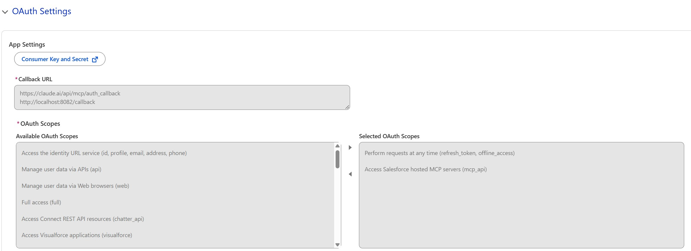
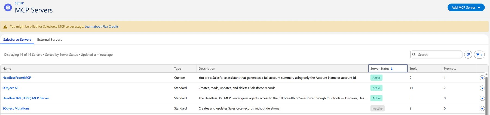
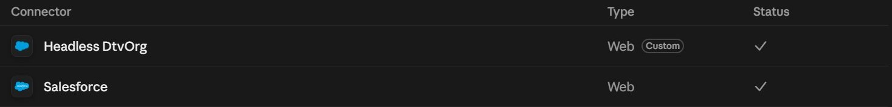
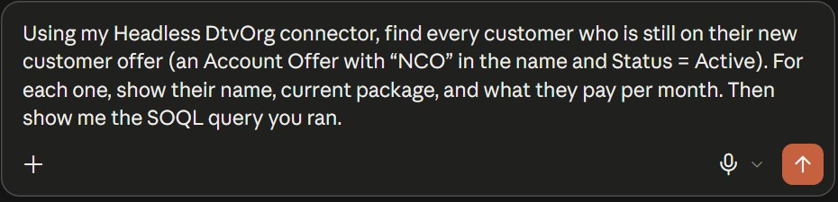
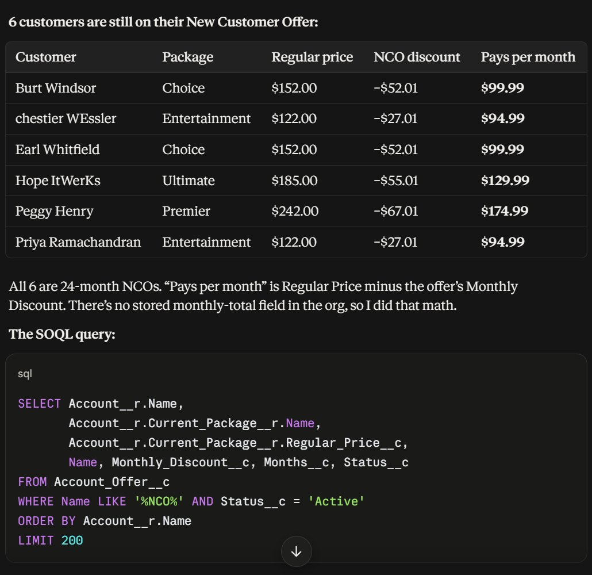
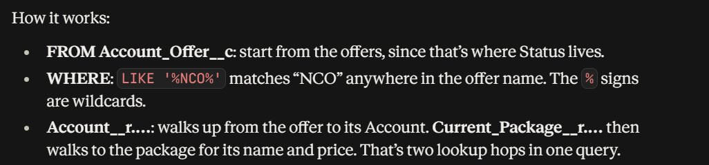
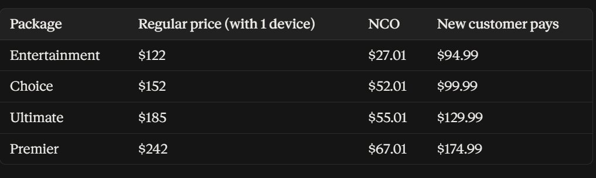
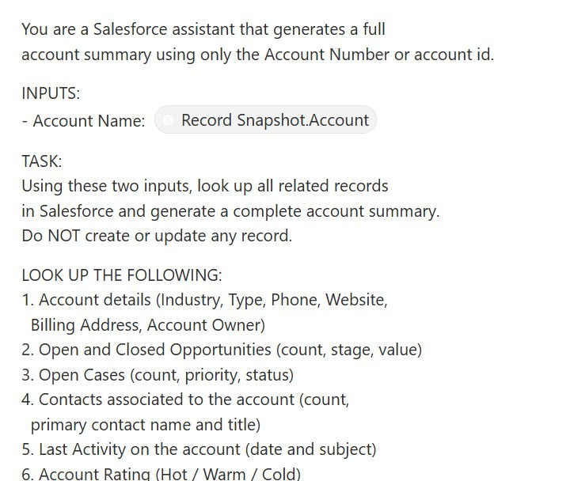

I connected a Salesforce org to Claude, Claude Code and Cursor using Salesforce's hosted MCP servers. Now I can ask the org questions in plain English, fix data by describing the change, and run a Prompt Builder template from outside Salesforce, all through OAuth and the org's own security.
A lot of everyday Salesforce questions are simple to ask and slow to answer. Which customers are still on their new customer offer? What does this account pay right now? Getting that usually means building a report, writing a query, or clicking through records one at a time.
MCP (Model Context Protocol) is an open standard that lets AI tools connect to systems like Salesforce. With Salesforce's hosted MCP servers, an AI assistant can query and update the org directly, while the org's login, permissions and sharing rules stay in charge. I wanted to see how far that goes in practice, so I set it up end to end in my own org and used it for real work.
No custom code was needed for the connection itself. It's all Salesforce setup plus each AI tool's connector settings.
Claude (chat), Claude Code and Cursor, each with the org added as an MCP server.
An External Client App handles sign-in, so every request runs as a real Salesforce user.
Salesforce runs the MCP server. I turned on the ones I needed in Setup.
Records, SOQL queries and a Prompt Builder template, all available as tools.



I asked Claude a question a retention lead might actually ask. It wrote the SOQL query, ran it against the org through MCP, did the math, and explained the query.



While building another project, I found that the demo package prices in my org weren't realistic. Instead of editing records one by one, I gave Claude the real pricing structure and had it make the change through MCP.

Prompt templates normally run inside Salesforce. By exposing my Headless Account Summary template as its own MCP server (HeadlessPromtMCP), an AI tool like Claude Code can call it directly and get the same governed account summary without opening Salesforce.

Every call goes through OAuth as a real Salesforce user, so that user's profile, permission sets and sharing rules decide what the AI can see and change. The External Client App only grants the scopes MCP needs. The servers are switched on one at a time in Setup. Salesforce also offers a write server without deletes (SObject Mutations), which is the safer choice for a production org. I used write access only in my own developer org with mock data.
Built in my own Salesforce developer org with mock DIRECTV-style data. No real customer data is used.